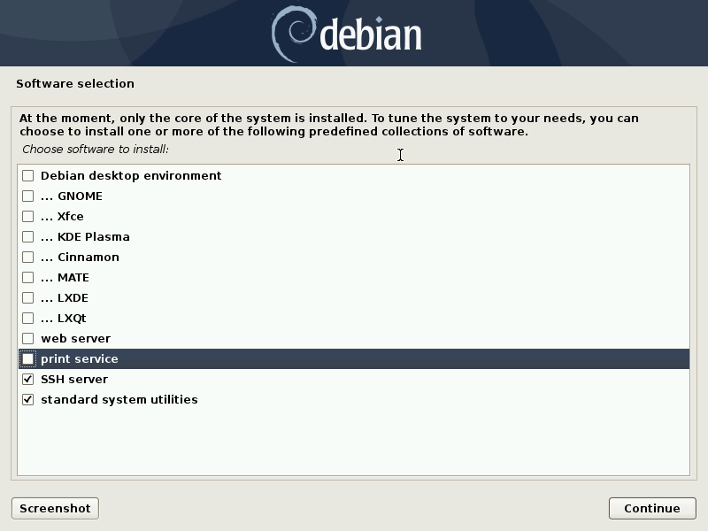

Installing a Debian unstable virtual machine¶
Page content
Introduction¶
These are my notes about the installation of a virtual machine on my Debian GNU/Linux stable system (“AMD64” architecture). The installed virtual machine (the guest) is also a Debian system, but the unstable (also known as Sid) one.
Debian packages are available in unstable in more recent versions than in stable. I wanted a Debian unstable virtual machine to be able to test the new version of some packages.
Checking the virtualizations extensions presence on the CPU¶
If your hardware has virtualization support, then you should enable it in the BIOS.
To know whether your hardware has virtualization support, issue the following command. If it prints something, then your hardware has virtualization support:
grep "^flags\s*:" /proc/cpuinfo \
| head -1 \
| sed "s/^.\+:\s*//" \
| sed "s/ \+/\n/g" \
| grep "vmx\|svm"
Installing the libvirt family of tools¶
I install the libvirt family of tools as root with:
apt-get install virtinst libvirt-daemon-system libvirt-clients # As root.
The libvirt-clients package comes with the virsh program, to be used to
manage the virtual machines and get useful information. Examples
(as root):
virsh list --all # List the virtual machines.
virsh net-list --all # List the virtual networks.
The osinfo and its querying tools are useful too:
apt-get install libosinfo-bin # As root.
Preparing storage locations¶
For the virtual machine images¶
The default location (“storage pool”) for the virtual machines is
/var/lib/libvirt/images.
On some of my systems, the free space in /var is very limited. I want the
virtual machines to be located in my home directory instead. So I create a
directory with mkdir -p ~/vm/libvirt/images. And then, as root, I do:
chown root:root /home/my_user_name/vm/libvirt/images # Change directory
# ownership to root.
chmod 711 /home/my_user_name/vm/libvirt/images # Change permissions (no
# read/write permission
# for non-root users).
You can see the list of the storage pools managed by libvirt with:
virsh pool-list # As root.
If this list is empty, then I define and start the default storage pool with:
virsh pool-define-as default dir \
--target /home/my_user_name/vm/libvirt/images # As root.
virsh pool-autostart default # As root.
virsh pool-start default # As root.
If the default storage pool is already existing, then I check the path with
virsh pool-dumpxml default (as root) and change it if needed with:
virsh pool-edit default # Edit the path and save.
After a reboot, virsh pool-dumpxml default (as root) shows the new
path.
For the installer ISO image¶
Nothing complicated here, I just create a directory as an unprivileged user:
mkdir -p ~/vm/installer_iso/debian_testing
Searching operating systems in the osinfo database¶
When creating the virtual machine with virt-install, it is recommended to provide the –os-variant
option. The possible values for that option are the short IDs provided by
command osinfo-query os:
osinfo-query os|less
osinfo-query os|grep Debian
Getting a Debian testing installer image¶
Debian testing installer images are available for download and updated daily (for the small (“netinst”) images at least). See the Debian installer page of the Debian developers’ corner.
You can download the “netinst” Debian testing installer image for the “AMD64” architecture with:
cd ~/vm/installer_iso/debian_testing
wget https://cdimage.debian.org/cdimage/daily-builds/daily/arch-latest/amd64/iso-cd/debian-testing-amd64-netinst.iso
You might want to verify the authenticity of the ISO image. It is the same process as for a Debian stable installer image.
Creating the Debian unstable virtual machine¶
Start the installation¶
I enable the default virtual network as root with:
virsh net-start default # As root.
You may want to set the default to start automatically:
virsh net-autostart default # As root.
I make sure the applications running as root can connect to the X server:
xhost +local: # As "normal" user.
Then I set and export the DISPLAY variable as root:
export DISPLAY=:0.0 # As root.
I create the virtual machine as root with the following command (my working directory was the one containing the Debian testing installer ISO image):
virt-install --name debian_unstable \
--memory 1024 \
--vcpus=1 \
--cdrom debian-testing-amd64-netinst.iso \
--disk pool=default,size=10 \
--os-variant debiantesting \
--graphics spice \
--channel spicevmc & # As root.
Debian testing base installation¶
I proceed with the installation as I would for a “normal” Debian installation. I choose the most simple disk partition scheme (all in a single partition) and requires the installation of a SSH server.
Once the installation is complete, the virtual machine automatically restarts.
I lauch virt-viewer (as root) to get a window to the virtual machine:
virt-viewer debian_unstable & # As root.
Upgrade to Debian unstable¶
The first step to upgrade to Debian unstable is to edit
/etc/apt/sources.list (as root, on the guest):
Substitute the Debian testing distribution name (which was “bullseye”) with “unstable”.
Comment out any line containing
security.debian.org.
The second step is to execute:
apt-get update; apt-get dist-upgrade # As root, on the guest.
Install X.org and Openbox¶
I then install X.org and Openbox on the virtual machine:
apt-get install xorg openbox openbox-menu menu # As root, on the guest.
Enable copy’n’paste between host and guest¶
The package spice-vdagent enables copy’n’paste between host and guest:
apt-get install spice-vdagent # As root, on the guest.
Configure display resolution¶
By default, X.org display resolution on the guest is 1024x768. I prefer
1920x1080 (which is the resolution of my monitor). So I create a specific X.org
configuration file (/etc/X11/xorg.conf, which does not exist by default).
The starting point is the file (/root/xorg.conf.new) that X.org generates
when this command is issued (exit X.org first):
Xorg -configure # As root, in the guest.
In /root/xorg.conf.new, there is a Monitor section for a monitor with
identifier Monitor0. I add “Modelines” in this section.
“Modelines” look like:
We can find the data that those “Modelines” are made of in a X.org log file
generated with (in this example, the file is called xlog.txt):
Xorg -verbose 6 > xlog.txt 2>&1 # As root, on the guest.
This gets you in Xorg with no way to exit. Use the “Send key” menu item of
virt-viewer to send, say, “Ctrl-Alt-F3” and access a new console where you can
log in as root, find the process ID of Xorg with ps -ef|grep Xorg and kill
Xorg with a kill <process_id> command.
A more comfortable way of getting the X.org log file is to automatically kill
X.org after a few seconds. We need the killall command for that, provided
by the Debian package psmisc:
apt-get install psmisc # As root, on the guest.
Xorg -verbose 6 > xlog.txt 2>&1 & sleep 3 && killall Xorg # As root, on the
# guest.
In xlog.txt, we find lines like the following, which help building the
“Modelines”:
Once I have added the “Modelines” in /root/xorg.conf.new, I edit the
Screen section and add a Display subsection with a Modes line
matching the resolution I want:
You can check that your /root/xorg.conf.new is a correct configuration file
with a test of X.org:
Xorg -config /root/xorg.conf.new -retro # As root, on the guest.
or:
Xorg -config /root/xorg.conf.new -retro & sleep 3 && killall Xorg # As root,
# on the
# guest.
The final step is to copy /root/xorg.conf.new to /etc/X11/xorg.conf:
cp xorg.conf.new /etc/X11/xorg.conf # As root, on the guest.
You can download this xorg.conf file.
Shutting down and restarting the virtual machine¶
To shut down the virtual machine, I just do as for a “real” machine. For example:
systemctl poweroff # As root, on the guest.
Alternatively, this virsh command run from the host should also shut down
the virtual machine:
virsh shutdown debian_unstable # As root.
If it’s not enough:
virsh destroy debian_unstable # As root.
To restart the virtual machine I do:
virsh start debian_unstable # As root.
virt-viewer debian_unstable # As root.
or, if I want the viewer in full screen mode:
virt-viewer -f debian_unstable # As root.
Again, you need to make sure the applications running as root can connect to
the X server, so you may have to do (prior to launching virt-viewer):
xhost +local: # As "normal" user.
and:
export DISPLAY=:0.0 # As root.
Finding the IP address of the virtual machine¶
Having the IP address of the virtual machine is useful, for example to connect to it from the host via SSH.
On a Debian GNU/Linux system, you probably have the iproute2 package
installed. In this case, the following command should show (among other
information) the IP address:
ip addr # On the guest.
If you don’t have the ip command, you may have the ifconfig command
(provided by package net-tools on a Debian GNU/Linux system) which does
show (among other information) the IP address:
ifconfig # On the guest.
Alternatively, you should be able to get the IP address of a guest without
login into the guest, using virsh:
virsh net-dhcp-leases default # As root, on the host.
Removing the virtual machine¶
Once shutdown, the virtual machine can be entirely removed with these commands:
virsh undefine debian_unstable # As root.
virsh vol-delete --pool default debian_unstable.qcow2 # As root.